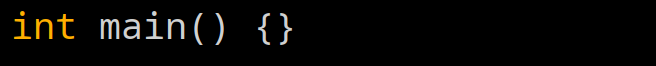
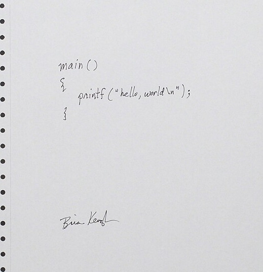
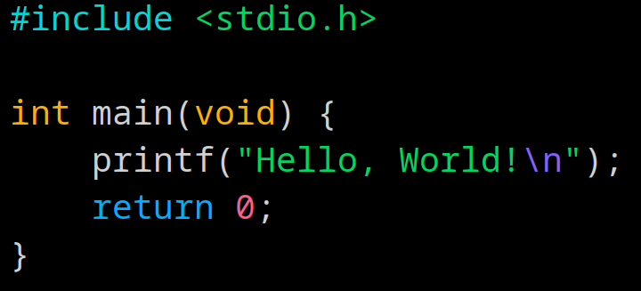

Aprender C
Atividade extensionista UNINTER
4. Programa minimo em C
Um programa minimo em C se da com main() sendo definido como uma função vazia

4.1 Hello, World!
"Hello, World!\n" é o texto usado para teste de output em linguagens de programação.
É o teste mais comum para saber se o ambiente do compilador esta configurado correto.
Testando saida para o terminal, linkagem com as bibliotecas do sistema e etc.

Hello, world escrito em um papel por Brian Kernighan em 1978
4.2 Entendendo o programa linha por linha

Linhas que começam com #, são chamadas de diretivos de pre-processamento.
O diretivo "include", diz para o compilador copiar o conteúdo do arquivo onde a linha esta inserida.
Nesse caso, ele esta incluindo a biblioteca stdio (standart input/output), qual define funções que iremos utilizar depois.
Aqui definimos a função principal, o ENTRY POINT de nosso programa, indicamos que ele não toma argumentos, e abrimos um bloco {} que define o corpo da função.
Aqui, chamamos a função printf, que foi incluida por stdio.h, ela aceita um argumento de texto, no qual passamos Hello, World!\n
O escape sequence \n, indica que essa sequencia de caracteres deve ser substituida por um "newline"
}
Aqui indicamos que o programa terminou de forma corretam indicado pela função main retornando 0.
Na maioria dos sistemas operacionais o RETURN_SUCESS é 0. Todo código de saida que não é 0 pode representar um erro diferente.